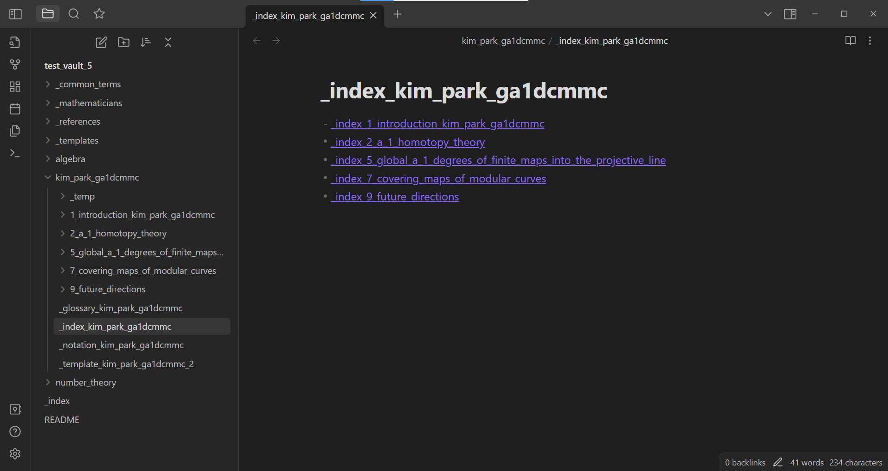
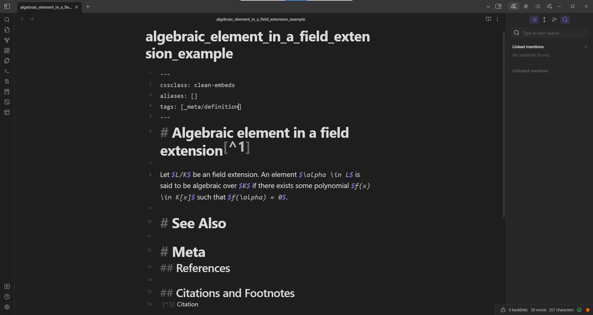

import os
from pathlib import Path
import shutil
import tempfile
from trouver.helper.tests import _test_directory
from trouver.helper.files_and_folders import text_from_file
from trouver.latex.convert import (
divide_preamble, divide_latex_text, custom_commands,
setup_reference_from_latex_parts
)How to use
Parse LaTeX documents and split them into parts
Trouver can parse LaTeX documents and split them up into parts which are convenient to read in Obsidian.md and to take notes on. For example, the following code splits up this paper in creates a folder in an Obsidian.md vault[^4].
# This context manager is implemented to make sure that a temporary
# folder is created and copies contents from `test_vault_5` in `nbs/_tests`,
# only the contents of the temporary folder are modified, and
with (tempfile.TemporaryDirectory(prefix='temp_dir', dir=os.getcwd()) as temp_dir):
temp_vault = Path(temp_dir) / 'test_vault_5'
shutil.copytree(_test_directory() / 'test_vault_5', temp_vault)
sample_latex_file = _test_directory() / 'latex_examples' / 'kim_park_ga1dcmmc' / 'main.tex'
sample_latex_text = text_from_file(sample_latex_file)
preamble, _ = divide_preamble(sample_latex_text)
parts = divide_latex_text(sample_latex_text)
cust_comms = custom_commands(preamble)
vault = temp_vault
location = Path('') # The path relative to the vault of the directory in which to make the new folder containing the new notes.
reference_name = 'kim_park_ga1dcmmc'
author_names = ['Kim', 'Park']
setup_reference_from_latex_parts(
parts, cust_comms, vault, location,
reference_name,
author_names)
# os.startfile(os.getcwd()) # This open the current working directory; find the temporary folder in here.
# input() # There should be an input prompt; make an input here when you are done viewing the
Obsidian.md The text in magenta are links, each to a file in the Obsidian.md vaultWhile Obsidian.md is not strictly necessary to use trouver or to read and write the files created by setup_reference_from_latex_parts (in fact, any traditional file reader/writer can be used for such purposes), reading and writing the files on Obsidian.md can be convenient. Moreover, even when you use Obsidian, your data is in a local folder. In particular, even if Obsidian.md happens to get shut down, get bought, or change privacy policy, you will (supposedly) not lose access to your data.
ML model utilities
We have trained a few ML models to detect/predict and provide information about short (or at least not-too-long) mathematical text. These ML models are available on Hugging Face and as such, they can be downloaded to and used from one’s local machines. Please note that ML models can be large and the locations that the Hugging Face Transformers library downloads such models to can vary from machine to machine. Typically, the models are stored in the following directories:
- Linux/macOS:
~/.cache/huggingface/transformers - Windows:
C:\Users\<YourUsername>\.cache\huggingface\transformers
For each of these models, we may or may not have also written some instructions on how to train similar models given appropriately formatted data1.
Note that the data used to train these models contains mathematical text pertaining mostly to fields closely related to number theory and algebraic geometry.
Use an ML model to categorize and label the note types
One of these ML models predicts the type of a piece of mathematical writing. For example, this model may predict that
Let $L/K$ be an field extension. An element $\alpha \in L$ is said to be algebraic over $K$ if there exists some polynomial $f(x) \in K[x]$ such that $f(\alpha) = 0$.introduces a definition. For the purposes of trouver, an Obsidian.md note containing ought to be labeled with the #_meta/definition tag by adding the text _meta/definition to the tags field in the frontmatter YAML metadata of the note:

_meta/definition in the tags field in the frontmatter YAML metadata of the noteSee markdown.obsidian.personal.machine_learning.information_note_types for more details.
This ML model is trained using the fast.ai library with the ULMFiT approach; see how_to.train_ml_model.fastai for the steps taken to train this model. This ML model is also available on Hugging Face under the repository hyunjongkimmath/information_note_type
The following code downloads the model into the local Hugging Face cache (if necessary) and loads the model.
import pathlib
from pathlib import WindowsPath
import platform
from huggingface_hub import from_pretrained_fastairepo_id = 'hyunjongkimmath/information_note_type'
# There is a PosixPath problem when trying to load
# the model on Windows; we get around this problem
# within the `if` statement.
if platform.system() == 'Windows':
temp = pathlib.PosixPath # See https://stackoverflow.com/questions/57286486/i-cant-load-my-model-because-i-cant-put-a-posixpath
pathlib.PosixPath = pathlib.WindowsPath
information_note_type_model = from_pretrained_fastai(repo_id)
pathlib.PosixPath = temp
else:
information_note_type_model = from_pretrained_fastai(repo_id)sample_prediction_1 = information_note_type_model.predict(r'Let $L/K$ be an field extension. An element $\alpha \in L$ is said to be algebraic over $K$ if there exists some polynomial $f(x) \in K[x]$ such that $f(\alpha) = 0$.')
print(sample_prediction_1)
sample_prediction_2 = information_note_type_model.predict(r'Theorem. Let $q$ be a prime power. Up to isomorphism, there is exactly one field with $q$ elements.')
print(sample_prediction_2)(['#_meta/definition', '#_meta/notation'], tensor([False, False, False, False, False, False, True, False, False, False,
True, False, False, False]), tensor([1.9631e-03, 3.4931e-04, 1.7551e-02, 4.8163e-02, 5.7628e-06, 3.0610e-06,
9.6544e-01, 2.3179e-03, 2.4539e-03, 1.6170e-02, 5.8807e-01, 4.5185e-03,
2.5055e-04, 4.6183e-03]))(['#_meta/concept', '#_meta/proof'], tensor([False, False, False, True, False, False, False, False, False, False,
False, True, False, False]), tensor([3.4701e-03, 6.6588e-05, 7.8861e-02, 9.7205e-01, 8.8357e-06, 6.1183e-06,
9.5552e-02, 4.0747e-03, 2.7043e-04, 2.7545e-02, 1.3064e-02, 5.6198e-01,
1.5603e-04, 5.5122e-03]))At the time of this writing (01/18/2023), the model seems to incorrect predict - in sample_prediction_1 that the text introduces a notation. - in sample_prediction_2 that the text contains a proof.
# from trouver.markdown.obsidian.personal.machine_learning.information_note_types importWhile one can make use of the model’s predict method as is, trouver also provides functions which predict the types of mathematical text written in notes formatted in a specific way and record on these notes the predictions made. This way, one can make the model predict once and use these predictions for later, which can save computational resources.
from trouver.markdown.obsidian.vault import VaultNote
from trouver.markdown.obsidian.personal.notes import notes_linked_in_notes_linked_in_note
from trouver.markdown.obsidian.personal.machine_learning.information_note_types import automatically_add_note_type_tagswith (tempfile.TemporaryDirectory(prefix='temp_dir', dir=os.getcwd()) as temp_dir):
temp_vault = Path(temp_dir) / 'test_vault_8'
shutil.copytree(_test_directory() / 'test_vault_8', temp_vault)
reference = 'number_theory_reference_1'
index_note = VaultNote(temp_vault, name=f'_index_{reference}')
# `notes` below is a list of `VaultNote` objects.
# Also, the `notes_linked_in_note` function can be a useful
# alternative to the `notes_linked_in_notes_linked_in_note` function.
notes = notes_linked_in_notes_linked_in_note(index_note, as_dict=False)
print("This is what one of the notes looks like before predicting its note type:\n\n")
print(notes[0].text())
print("\n\nTagging notes\n\n")
# Note that `information_note_type_model` was loaded previously.
automatically_add_note_type_tags(information_note_type_model, temp_vault, notes)
print("This is what the same note looks like after predicting its note type:\n\n")
print(notes[0].text())
# os.startfile(os.getcwd()) # This opens the current working directory; find the temporary folder in here and explore it if desired.
# input() # There should be an input prompt; make an input here when you are done viewing theThis is what one of the notes looks like before predicting its note type:
---
cssclass: clean-embeds
aliases: [number_theory_reference_1_ring]
tags: [_meta/literature_note, _reference/number_theory_reference_1]
---
# Ring[^1]
A **(commutative) ring** is a set $R$, equipped with two binary operators, denoted $+$ and $\cdot$, such that the following hold:
1. $R$ is an abelian group under $+$ with identity element $0$.
2. $R$ is an commutative monoid under $\cdot$ with identity element $1$.
3. For all $a,b,c \in R$, we have $a \cdot (b+c) = a \cdot b + a \cdot c$.
# See Also
# Meta
## References
![[_reference_number_theory_reference_1]]
## Citations and Footnotes
[^1]: Kim, Definition 1.1, Page 1
Tagging notes
This is what the same note looks like after predicting its note type:
---
cssclass: clean-embeds
aliases: [number_theory_reference_1_ring]
tags: [_reference/number_theory_reference_1, _meta/literature_note, _auto/_meta/definition]
---
# Ring[^1]
A **(commutative) ring** is a set $R$, equipped with two binary operators, denoted $+$ and $\cdot$, such that the following hold:
1. $R$ is an abelian group under $+$ with identity element $0$.
2. $R$ is an commutative monoid under $\cdot$ with identity element $1$.
3. For all $a,b,c \in R$, we have $a \cdot (b+c) = a \cdot b + a \cdot c$.
# See Also
# Meta
## References
![[_reference_number_theory_reference_1]]
## Citations and Footnotes
[^1]: Kim, Definition 1.1, Page 1Use an ML model to find notations introduced in text
Another ML model predicts locations of notations introduced in text. This model is trained as a categorizer - given a piece of mathematical text in LaTeX in which a single LaTeX math mode string (surrounded either by the dollar sign $ or double dollar signs $$) is surrounded by double asterisks **, the model should determine whether or not the LaTeX math mode string contains a newly introduced notation.
For example, suppose that we want to find notations introduced in the following text:
Let $L/K$ be a Galois field extension. Its Galois group $\operatorname{Gal}(L/K)$ is defined as the group of automorphisms of $L$ fixing $K$ pointwise.Our approach is to consider each latex math mode strings in this text (of which there are 4: \(L/K\), \(\operatorname{Gal}(L/K)\), \(L\), and \(K\)), consider the four alternate versions of this text in which double asterisks ** are surround one of these math mode strings, and use the model to predict whether that math mode string contains a newly introduced notation. In particular, we pass through the model the following pieces of text:
Let **$L/K$** be a Galois field extension. Its Galois group $\operatorname{Gal}(L/K)$ is defined as the group of automorphisms of $L$ fixing $K$ pointwise.Let $L/K$ be a Galois field extension. Its Galois group **$\operatorname{Gal}(L/K)$** is defined as the group of automorphisms of $L$ fixing $K$ pointwise.Let $L/K$ be a Galois field extension. Its Galois group $\operatorname{Gal}(L/K)$ is defined as the group of automorphisms of **$L$** fixing $K$ pointwise.Let $L/K$ be a Galois field extension. Its Galois group $\operatorname{Gal}(L/K)$ is defined as the group of automorphisms of $L$ fixing **$K$** pointwise.Ideally, the model should determine only the second version of text to contain a newly introduced notation
See markdown.obsidian.personal.machine_learning.notation_identifcation for more details.
This ML model is also trained using the fast.ai library with the ULMFiT approach, and is available on Hugging Face under the repository hyunjongkimmath/notation_identification.
import pathlib
from pathlib import WindowsPath
import platform
from huggingface_hub import from_pretrained_fastairepo_id = 'hyunjongkimmath/notation_identification'
# There is a PosixPath problem when trying to load
# the model on Windows; we get around this problem
# within the `if` statement.
if platform.system() == 'Windows':
temp = pathlib.PosixPath # See https://stackoverflow.com/questions/57286486/i-cant-load-my-model-because-i-cant-put-a-posixpath
pathlib.PosixPath = pathlib.WindowsPath
notation_identification_model = from_pretrained_fastai(repo_id)
pathlib.PosixPath = temp
else:
notation_identification_model = from_pretrained_fastai(repo_id)contains_a_notation = notation_identification_model.predict(r'Let $L/K$ be a Galois field extension. Its Galois group **$\operatorname{Gal}(L/K)$** is defined as the group of automorphisms of $L$ fixing $K$ pointwise.')
does_not_contain_a_notation = notation_identification_model.predict(r'Let **$L/K$** be a Galois field extension. Its Galois group $\operatorname{Gal}(L/K)$ is defined as the group of automorphisms of $L$ fixing $K$ pointwise.')
print(contains_a_notation)
print(does_not_contain_a_notation)('True', tensor(1), tensor([9.0574e-08, 1.0000e+00]))
('False', tensor(0), tensor([1.0000e+00, 4.8617e-06]))# TODO: examples of using functions in markdown.obsidian.personal.machine_learning.notation_identifcation.Similarly as with the information_note_type model, trouver provides functions (namely automatically_mark_notations) which locate within notes mathematical notations that are newly introduced in the text of the notes and record on these notes locations of such notations (by surrounding double asterisks ** to LaTeX math mode strings). Note that this is done by applying the notation_identification model’s predict method as many times on a single piece of text as there are LaTeX math mode strings in the text. As such, these predictions often take a long time.
To save time, it is recommended to apply automatically_mark_notations only on notes which have the _meta/definition or _meta/notation tags (or _auto/_meta/definittion or _auto/_meta/notation) in their frontmatter YAML metadata2.
Warning The
automatically_mark_notationsfunction not only adds double asterisks**to LaTeX math mode strings, but also removes components such as links and footnotes from the text of the note. It is recommended to only apply this function to notes whose text has not been embellished with such components3. Moreover, theautomatically_mark_notationsis currently buggy and should not be applied to the same note twice
The test vault used in the below example contains a single note which has already been marked with the _meta/definition and _meta/notation notes. The following example in particular locates notations in that note at the very least.
from trouver.markdown.markdown.file import MarkdownFile
from trouver.markdown.obsidian.vault import VaultNote
from trouver.markdown.obsidian.personal.notes import notes_linked_in_notes_linked_in_note
from trouver.markdown.obsidian.personal.machine_learning.notation_identification import automatically_mark_notationswith (tempfile.TemporaryDirectory(prefix='temp_dir', dir=os.getcwd()) as temp_dir):
temp_vault = Path(temp_dir) / 'test_vault_8'
shutil.copytree(_test_directory() / 'test_vault_8', temp_vault)
reference = 'number_theory_reference_1'
index_note = VaultNote(temp_vault, name=f'_index_{reference}')
# `notes` below is a list of `VaultNote` objects.
# Also, the `notes_linked_in_note` function can be a useful
# alternative to the `notes_linked_in_notes_linked_in_note` function.
notes = notes_linked_in_notes_linked_in_note(index_note, as_dict=False)
one_note_with_notation_tag = VaultNote(temp_vault, name='number_theory_reference_1_Definition 1.7')
print("This is what one of the notes looks like before locating notations introduced:\n\n")
print(one_note_with_notation_tag.text())
print("\n\nFinding notations\n\n")
# Note that `information_note_type_model` was loaded previously.
automatically_add_note_type_tags(notation_identification_model, temp_vault, notes)
note_mfs = [MarkdownFile.from_vault_note(note) for note in notes]
# The below code ensures that the model searches for notations only in
# notes marked with a `_meta/definition` or a `_meta/notation`tag or
# their `_auto` versions.
notation_introducing_notes = [
note for note, mf in zip(notes, note_mfs)
if mf.has_tag('_auto/_meta/definition') or mf.has_tag('_auto/_meta/notation')
or mf.has_tag('_meta/definition') or mf.has_tag('_meta/notation')]
for note in notation_introducing_notes:
automatically_mark_notations(note, notation_identification_model, reference_name=reference)
print("This is what the same note looks like after locating notations introduced:\n\n")
print(one_note_with_notation_tag.text())
# os.startfile(os.getcwd()) # This opens the current working directory; find the temporary folder in here and explore it if desired.
# input() # There should be an input prompt; make an input here when you are done viewing theThis is what one of the notes looks like before locating notations introduced:
---
cssclass: clean-embeds
aliases: [number_theory_reference_1_ring_of_integers_modulo_n]
tags: [_meta/literature_note, _reference/number_theory_reference_1, _meta/definition, _meta/notation]
---
# Ring of integers modulo $n$[^1]
The ring of integers modulo $n$, denoted $\mathbb{Z}/n\mathbb{Z}$ has the elements $[m]$ for each integer $m$ where $[m_1] = [m_2]$ if and only if $m_1-m_2$ is divisible by $n$. As a ring, it has the following structure:
1. $[m_1] + [m_2] = [m_1+m_2]$
2. $[m_1] \cdot [m_2] = [m_1 \cdot m_2]$.
# See Also
# Meta
## References
![[_reference_number_theory_reference_1]]
## Citations and Footnotes
[^1]: Kim, Definition 1.7, Page 3
Finding notations
This is what the same note looks like after locating notations introduced:
---
cssclass: clean-embeds
aliases: [number_theory_reference_1_ring_of_integers_modulo_n]
tags: [_meta/literature_note, _auto/l, _auto/e, _auto/F, _meta/notation, _auto/a, _meta/definition, _reference/number_theory_reference_1, _auto/s]
---
# Topic[^1]
The ring of integers modulo $n$, denoted **$\mathbb{Z}/n\mathbb{Z}$** has the elements $[m]$ for each integer $m$ where $[m_1] = [m_2]$ if and only if $m_1-m_2$ is divisible by $n$. As a ring, it has the following structure:
1. $[m_1] + [m_2] = [m_1+m_2]$
2. $[m_1] \cdot [m_2] = [m_1 \cdot m_2]$.
# See Also
# Meta
## References
![[_reference_number_theory_reference_1]]
## Citations and Footnotes
[^1]: Kim, Definition 1.7, Page 3Use an ML model to summarize notations introduced in text
Now that we have found notations introduced in text and created notation notes for them in our Obisidian.md vault, we now generate summaries for these notations.
The ML model in question fine-tuned from a T5 model
This ML model is available on Hugging Face under the repository hyunjongkimmath/notation_summarizations_model.
from transformers import AutoModelForSeq2SeqLM, AutoTokenizer, pipelinemodel = AutoModelForSeq2SeqLM.from_pretrained('hyunjongkimmath/notation_summarizations_model')
tokenizer = AutoTokenizer.from_pretrained('hyunjongkimmath/notation_summarizations_model')
summarizer = pipeline('summarization', model=model, tokenizer=tokenizer)The summarizer pipeline can be used to summarize notations newly introduced in a piece of mathematical text. The text needs to be formatted as follows:
summarize: <mathematical_text_goes_here>
latex_in_original: $<notation_to_summarize>$type(summarizer)transformers.pipelines.text2text_generation.SummarizationPipelinesummarizer("summarize:Let us now define the upper half plane $\mathbb{H}$ as the set of all complex numbers of real part greater than $1$.\n\n\nlatex_in_original: $\mathbb{H}$")Your max_length is set to 200, but you input_length is only 54. You might consider decreasing max_length manually, e.g. summarizer('...', max_length=27)[{'summary_text': 'the upper half plane of the real part greater than $1$. It is defined as the set of all complex numbers of real parts greater than $$.'}]In the above example, the summarizer determines that the notation $\mathbb{H}$ introduced in the text
Let us now define the upper half plane $\mathbb{H}$ as the set of all complex numbers of real part greater than $1$.denotes 'the upper half plane of the complex plane $\\ mathbb{ H} $. It is defined as the set of all complex numbers of real part greater than $1$.'.
Once we mark notations introduced in information notes by surrounding LaTeX math mode strings with double asterisks ** (manually and/or by using the notation_identification model, see the section about the notation_identification model above), we can use the make_notation_notes_from_double_asts function to make notation notes dedicated to those introduced notations and to link these newly created notation notes to the information notes.
After making these notation notes, we can use the append_summary_to_notation_note function to predict what each notation is supposed to denote and add these predicted summaries to the notation notes themselves.
For the example below, there is at least one information note with notations already marked with double asterisks **.
from trouver.markdown.obsidian.personal.notation import make_notation_notes_from_double_asts
from trouver.markdown.obsidian.personal.notation.in_standard_information_note import notation_notes_linked_in_see_also_section
from trouver.markdown.obsidian.personal.machine_learning.notation_summarization import append_summary_to_notation_notewith (tempfile.TemporaryDirectory(prefix='temp_dir', dir=os.getcwd()) as temp_dir):
temp_vault = Path(temp_dir) / 'test_vault_8'
shutil.copytree(_test_directory() / 'test_vault_8', temp_vault)
reference = 'number_theory_reference_1'
index_note = VaultNote(temp_vault, name=f'_index_{reference}')
# Also, the `notes_linked_in_note` function can be a useful
# alternative to the `notes_linked_in_notes_linked_in_note` function.
notes = notes_linked_in_notes_linked_in_note(index_note, as_dict=False)
one_note_with_notations_marked = VaultNote(temp_vault, name='number_theory_reference_1_Definition 2.3')
print("This is what the information note looks like before we add the links to the notation notes:\n\n")
print(one_note_with_notations_marked.text())
for note in notes:
new_notation_notes = make_notation_notes_from_double_asts(note, temp_vault, reference_name=reference)
print("\n\nThis is what the information note looks like after we add the links to the notation notes:\n\n")
print(one_note_with_notations_marked.text())
for note in notes:
notation_notes_linked_in_note = notation_notes_linked_in_see_also_section(note, temp_vault)
for notation_note in notation_notes_linked_in_note:
append_summary_to_notation_note(notation_note, temp_vault, summarizer)
print("\n\nThis is what the newly created notation notes look like after we add the predicted summaries:\n\n")
notation_notes_linked_in_the_one_note = notation_notes_linked_in_see_also_section(
one_note_with_notations_marked, temp_vault)
for notation_note in notation_notes_linked_in_note:
print(notation_note.text(), '\n')Your max_length is set to 200, but you input_length is only 166. You might consider decreasing max_length manually, e.g. summarizer('...', max_length=83)This is what the information note looks like before we add the links to the notation notes:
---
cssclass: clean-embeds
aliases: []
tags: [_meta/literature_note, _reference/number_theory_reference_1, _meta/definition, _meta/notation]
---
# Quotient ring of a ring by an ideal[^1]
Let $R$ be a ring and let $I$ be an ideal. The quotient ring **$R/I$** is the ring whose elements are the equivalence classes of elements of $R$ with respect to the equivalence relation **$\sim$** given by $x \sim y$ if $x-y \in I$ and whose ring structure is given by
$$\begin{align*}
[x]+[y] &= [x+y] \\
[x] \cdot [y] &= [x \cdot y].
\end{align*}$$
# See Also
# Meta
## References
![[_reference_number_theory_reference_1]]
## Citations and Footnotes
[^1]: Kim,
This is what the information note looks like after we add the links to the notation notes:
---
cssclass: clean-embeds
aliases: []
tags: [_meta/literature_note, _reference/number_theory_reference_1, _meta/definition, _meta/notation]
---
# Quotient ring of a ring by an ideal[^1]
Let $R$ be a ring and let $I$ be an ideal. The quotient ring **$R/I$** is the ring whose elements are the equivalence classes of elements of $R$ with respect to the equivalence relation **$\sim$** given by $x \sim y$ if $x-y \in I$ and whose ring structure is given by
$$\begin{align*}
[x]+[y] &= [x+y] \\
[x] \cdot [y] &= [x \cdot y].
\end{align*}$$
# See Also
- [[number_theory_reference_1_notation_R_I]]
- [[number_theory_reference_1_notation_sim]]
# Meta
## References
![[_reference_number_theory_reference_1]]
## Citations and Footnotes
[^1]: Kim, Your max_length is set to 200, but you input_length is only 166. You might consider decreasing max_length manually, e.g. summarizer('...', max_length=83)
This is what the newly created notation notes look like after we add the predicted summaries:
---
detect_regex: []
latex_in_original: [R/I]
tags: [_auto/notation_summary]
---
$R/I$ [[number_theory_reference_1_Definition 2.3|denotes]] the quotient ring of the ideal $R/I$. It is the ring whose elements are the equivalence classes of elements of $R$.
---
detect_regex: []
latex_in_original: ["\\sim"]
tags: [_auto/notation_summary]
---
$\sim$ [[number_theory_reference_1_Definition 2.3|denotes]] the quotient ring of the ideal $R/I$. It is the ring whose elements are the equivalence classes of elements of a ring $R$.
At the time of this writing (1/30/2023), the author of trouver believes that this summarization model could be improved upon with more data; thus far, this model was trained on less than 1700 data points.
Footnotes
Given time, the author of
trouvereventually plans on writing instructions on training each of the models.↩︎At the time of this writing (1/30/2023), the
information_note_typemodel is fairly good at telling when a note introduces a definition or a notation, but will often conflate the two. In other words, the model may predict that a note ought to have the_meta/definitiontag assigned to it when the_meta/notationtag should be assigned to it and vice versa, but the model will fairly usually assign at least one of the tags when the note introduces a definition or a notation and will assign neither of the tags when the note does not introduce a definition or a notation.↩︎More precisely,
automatically_mark_notationsfirst appliesprocess_standard_information_noteto aMarkdownFileobject constructed from theVaultNoteobject to roughly obtain the raw text of the note, uses that raw text to locate notations, marks the notations in the raw text, and then replaces the text from the note with the raw text with notations marked. In the process of obtaining the raw text, theprocess_standard_information_notefunction removes components such as links and footnotes from the text.↩︎There seems to be a bug in the above example where inexplicable tags (e.g.
_auto/s,_auto/a) are added to the note along with the double asterisks**. This issue is reported as Issue #33.↩︎